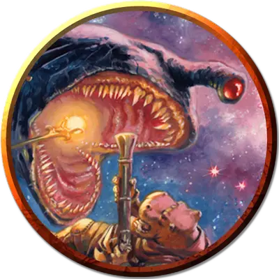

Мамаша
Big Momma
Огромный Монстр, без мировоззрения, именной НИП

Класс Доспеха 15 (природный доспех)
Хиты 157 (15к12 + 60)
Скорость 0 футов, летая 40 футов
| мод | спас | ||
|---|---|---|---|
| СИЛ | 22 | +6 | +6 |
| ЛОВ | 16 | +3 | +3 |
| ТЕЛ | 19 | +4 | +4 |
| мод | спас | ||
|---|---|---|---|
| ИНТ | 4 | −3 | −3 |
| МДР | 13 | +1 | +1 |
| ХАР | 5 | −3 | −3 |
Навыки Восприятие +5, Скрытность +11
Чувства тёмное зрение 120 футов, пассивное Восприятие 15
Опасность 11 (7200 опыта)
Бонус мастерства +4
Особенности
Необычная природа. Поглотитель не нуждается в воздухе.
Действия
Проглатывающий укус. . Рукопашная атака оружием: +10 к попаданию, досягаемость 10 фт., одна цель. Попадание: 45 (6к12 + 6) колющего урона. Если цель — существо Среднего размера или меньше, она должна преуспеть в спасброске Ловкости Сл 16, иначе будет проглочена поглотителем. Поглотитель может проглотить лишь одно существо за раз.
Проглоченное существо ослеплёно и опутано, обладает полным укрытием от атак и прочих эффектов, исходящих снаружи поглотителя, и получает 11 (2к10) урона ядом в начале каждого хода поглотителя от ядовитого газа в его пищеводе.
Если поглотитель за один ход получает 25 или больше урона от существа, находящегося внутри, поглотитель должен в конце этого хода преуспеть в спасброске Телосложения Сл 20, иначе отрыгнёт проглоченное существо, которое падает ничком в пространстве в пределах 10 футов от поглотителя. Если поглотитель умирает, проглоченное существо перестаёт быть опутанным им и может высвободиться из трупа, потратив 10 футов перемещения, падая при выходе ничком.
Бонусные действия
Луч страха (перезарядка 4–6). Глаз поглотителя испускает невидимый магический луч, направленный на одно существо, которое падальщик может видеть в пределах 60 футов. Цель должна преуспеть в спасброске Мудрости Сл 16, иначе станет испуганной поглотителем до начала его следующего хода.
Описание
Пустотные поглотители достигают 20 футов в длину. Каждая из этих угольно-чёрных шкур сама по себе представляет значительную угрозу. В то время, как большинство других поглотителей довольствуются объедками со стола, пустотный поглотитель охотится за поваром.
Он способен испускать невидимый луч из своего глаза, заставляющий его цель испытывать еще более сильный страх, чем обычно при встрече с существом такого размера и природы.
Поглотители
Поглотители — похожие на акул падальщики, летающие в космосе, и питающиеся всем, что помещается в их пасть. Поглотители не всегда агрессивны. Часто они следуют за более крупными существами, а также кораблями и астероидами, питаясь продуктами жизнедеятельности и выброшенным мусором. Они могут проникать в воздушные оболочки этих тел. Поэтому когда их «хозяин» движется (часто на большой скорости), поглотители не отстают от него. Небольшие виды — коричневые и серые, — редко доставляют неприятности. Крупные виды более грозные, так как не ждут, пока пища сама придёт к ним.
У поглотителя один большой глаз на передней стороне головы. Глаз светится, пока существо бодрствует. Широкая пасть полна острых зубов. Во время сна падальщик лениво летает по кругу, а в остальное время перемещается по космосу подобно акуле в воде.
По часовой стрелке, начиная сверху: ночной поглотитель, серый поглотитель, пустотный поглотитель, коричневый поглотитель.